Starling is a tool for graphically building image and video processing, by connecting several elementary blocks.
| 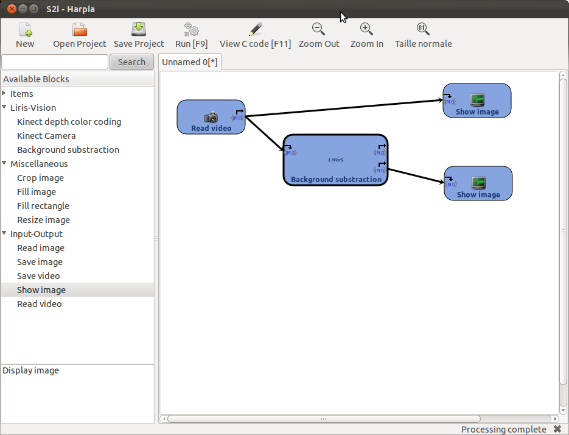 |
|
At run time, the block graph is converted into C++ code, which is compiled and executed. The two windows on the right in above illustration, are produced by the C++ generated program.
Starling is to be considered as a fast prototyping tool that produces C++ examples of using OpenCV and LIRIS-VISION features.
Use the toolbox located on the left side of the screen to select a block. Drag'n Drop it on the white canvas to start a processing chain.
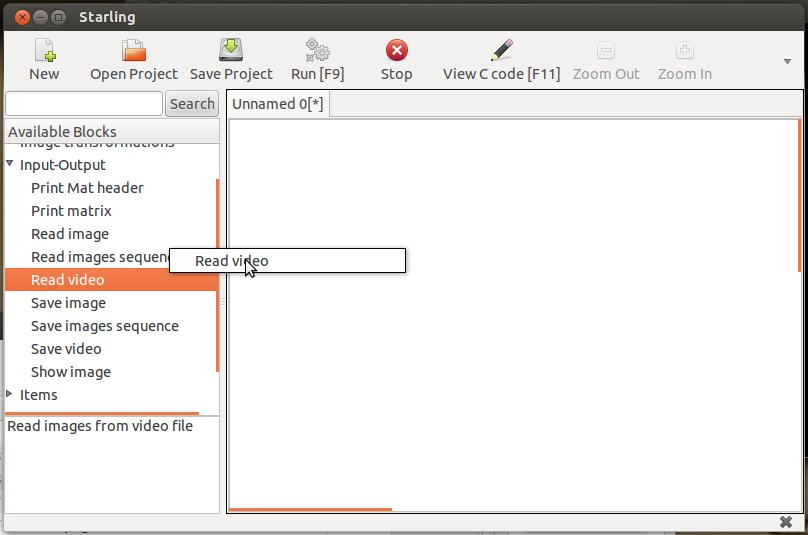Blocks may have inputs and/or outputs. Clicking on one output (at the right side of the block) will initiate a connector; clicking on an input (left side of the block) will confirm it.
| 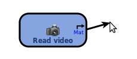 | 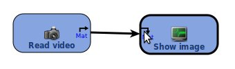 |
Outputs and inputs are of a given type (e.g. image, point, rectangle, integer). Connections are only possible between ports of the same type.
`Information flow` is propagated through blocks starting from the `source` blocks (blocks without inputs). A block with all its required inputs connected to `flowing` connectors will have flow. Blocks with flow are indicated by black border.
Red border means that the block hasn't the `information flow`, because one required input is missing. Blocks without `information flow` won't be processed.
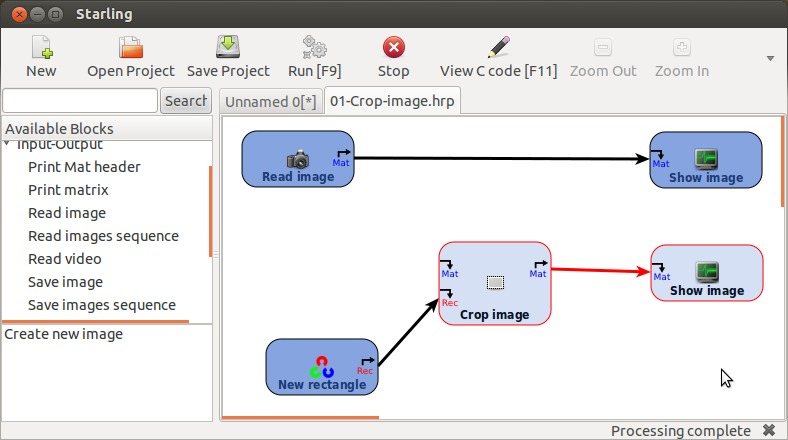In the top of the block selection toolbox, there is a search field (Ctrl+F). Enter the name of an operation to quickly find it.
The LIRIS-VISION blocks are available in the left panel, under the `Liris-Vision` item.
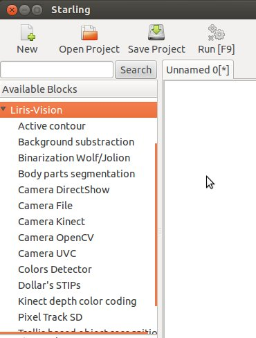
To view one block's properties, click twice on the block. This will open a new window with some indications about the block parameters, its inputs and ouputs. The values of the parameters can be changed here. Click OK button to confirm.
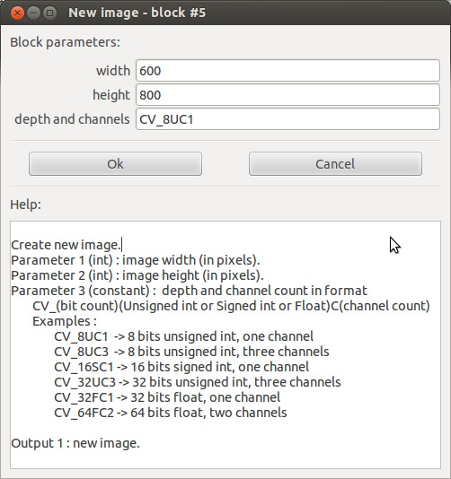
When the workflow is built, click the Run button (or press F9) to execute it. The workflow is then translated in C++ code, compiled, and executed. Compilation errors appears in the console.
When viewing a live feed (video from files or streams), click the Stop button (or press ESC key) to exit, or SPACE key to pause (make sure the video output window is selected).
Click the "View C code" button (or press F11 key) to open an editor containing the C++ code corresponding to the last executed workflow.
| 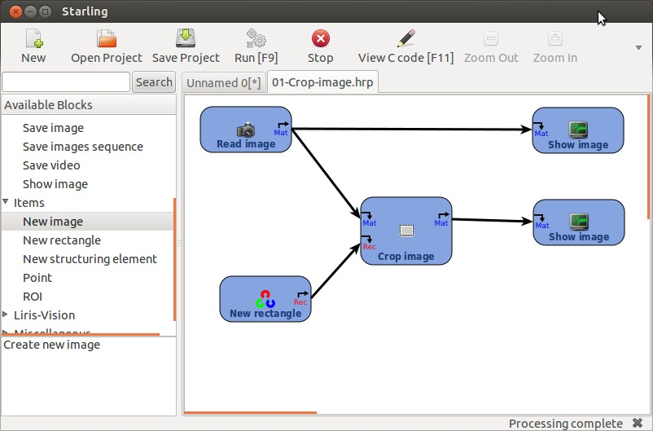 | 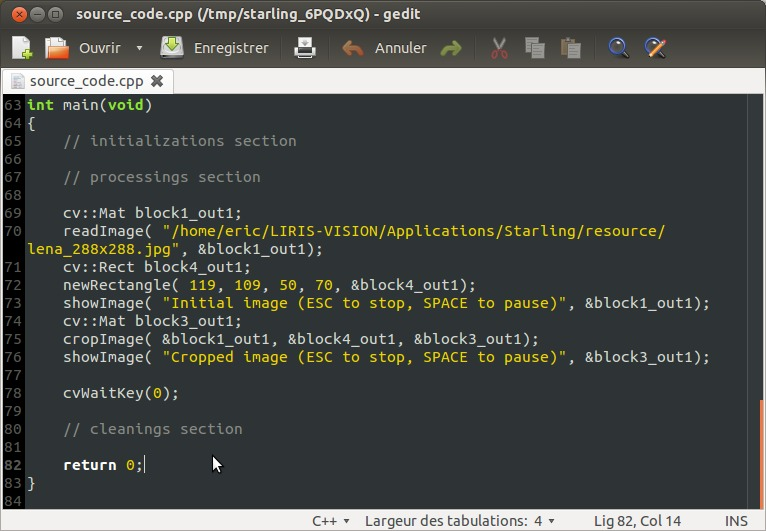 |
Useful examples can be accessed within the Examples menu:
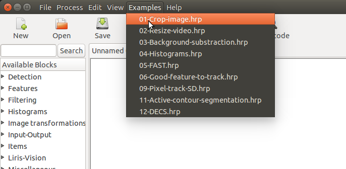The configuration of Starling can be changed through the preferences window. It is accessible by the 'Edit > Preferences' menu option.
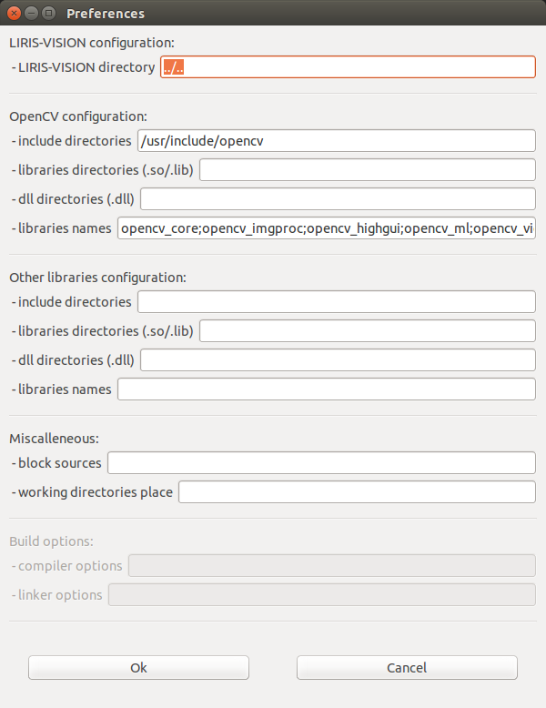
The configuration parameters are:
- the LIRIS-VISION base directory (to use LIRIS-VISION blocks),
- informations on the OpenCV library to use,
- informations on other libraries to use,
- the places to search for local blocks.
Paths can be absolute or relative. Relative paths are relative to Starling directory.
The preferences are saved in an xml file named '.starling.conf', in the user's home directory. Use the '-c' option at start up to use another configuration file.